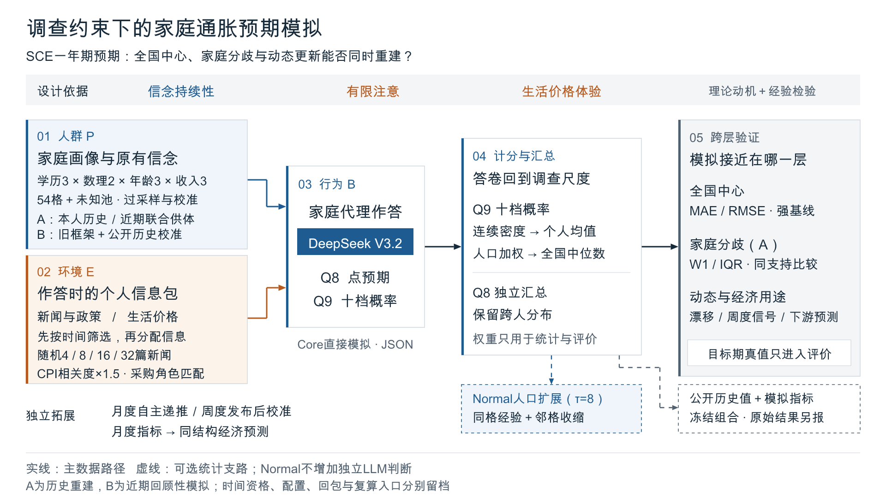

SCE全流程框架图 · 初版
论文与视频共用母版：P/E共同进入家庭代理，计分与验证向右展开，统计处理和独立拓展单列。当前为图形初稿，尚未插入论文。

本轮主要看三件事
- 阅读顺序是否自然：先理解一个家庭怎样形成答卷，再看如何汇总和检验。
- 主干与分支是否明确：Normal、冻结组合和动态/下游拓展不混成同一条必经流程。
- 放进论文后是否需要删字：当前按正文全宽、约半页高度准备；视频可以分区域放大讲解。
A为历史重建，B为近期回顾性模拟。个人日期不等于所有输入逐人严格实时认证；B及周度无近期真人微观真值。采购角色是操作化匹配，独立收益仍有边界。
查看180 mm论文宽度预览
以下按CSS物理单位显示，屏幕实际毫米随缩放和设备变化；最终排版请以PDF为准。手机可横向滑动。